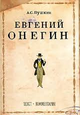

Пушкин А.С. - Евгений Онегин

Роман в стихах А. С. Пушкина "Евгений Онегин" уникален. Это настоящая "энциклопедия русской жизни". Канонический текст романа проиллюстрировал заслуженный художник России А. 3. Иткин. Классические тонкие и нежные акварели точно и бережно передают аромат эпохи.Комментарии к изданию написала Н. И. Михайлова, доктор филологических наук, профессор. Автор разговаривает с современным читателем доступным и понятным языком, помогая приблизиться к постижению огромного и прекрасного мира романа А. С. Пушкина.